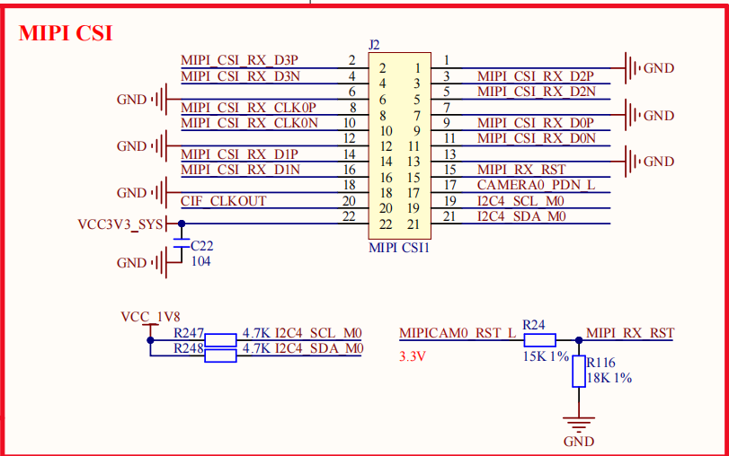

---
id: course-04-mipi-csi2-dphy
doc-type: course
title: MIPI CSI-2 / D-PHY
course-stage: "04"
learning-status: understood
evidence-status: verified
publish-status: published
updated: 2026-08-12
---
MIPI CSI-2 / D-PHY
[!success] 阶段状态
已完成 DTS、HW/逻辑 D-PHY probe、Subdev/Pad、Endpoint/Async 与 Media Link 主线验收。后续只在模拟面试或真实故障中按薄弱点回看，不再阻塞阶段 05。
为什么学习
Sensor ID 正常只说明控制面可用；还必须理解 RAW10 如何通过 Lane、D-PHY 和 CSI 接收链进入 RKISP。
在整条链路中的位置
IMX415 Source Pad → D-PHY Sink/Source → rkisp-csi-subdev → rkisp-isp-subdev。
输入 / 输出 / 软件身份 / 硬件身份
输入是四条 Data Lane 上的 CSI-2 串行包；输出是送往 RKISP 的 RAW 数据。D-PHY 是硬件物理层，其驱动使用 Platform Driver 并注册 V4L2 subdev/Media entity。
RK3568 当前对应
rockchip-csi2-dphy0 的 pad0 接 IMX415，pad1 输出到 rkisp-csi-subdev。
DTS / 源码入口
imx415_out ↔ mipi_in_ucam1、csidphy_out ↔ isp0_in；源码见 02-源码陪读/04-DPHY/00-源码陪读索引。
实板验证
media-ctl -p 显示 IMX415 到 D-PHY 的 link 为 [ENABLED]，格式为 SGBRG10_1X10。它不能单独证明每帧都无 CRC/ECC 错误。
常见故障
检查 lane 数/顺序、endpoint 双向引用、时钟速率、Sensor stream 状态和 D-PHY/CSI 错误日志。
面试表达
CSI-2 规定包和协议，D-PHY 负责差分电气传输；多 Lane 是多条并行工作的串行通道。
验收题
为什么四条 Data Lane 仍称串行传输？[ENABLED] 能证明什么、不能证明什么？
下一阶段接口
下一章进入 05-V4L2-Subdev；entity/pad/link 的系统化阅读在阶段 06 完成。
学习记录与源码对照
当前学习节点：IMX415 RAW10 → MIPI D-PHY → CSI-2 Receiver。
发布规则：本章通过全部验收前，只在 Obsidian 中学习和记录，不生成 HTML，也不加入 Phase0 框架图。
源码陪读：D-PHY 从 DTS 到 Media Graph 源码陪读
0. 当前学习位置
第 1 章：IMX415 Sensor 与驱动 ✅ 已完成
第 2 章：MIPI D-PHY 与 CSI-2 ⏳ 学习中
第 3 章：RKISP ⬜ 未开始
第 4 章：Media Controller ⬜ 未开始
第 5 章：V4L2、VB2 与 /dev/video0 ⬜ 未开始本章只回答一件事：
IMX415 产生 RAW10 后，
图像怎样通过 MIPI 物理连线进入 RK3568，
又怎样从 D-PHY 交给 CSI-2 Receiver？暂时不展开 RKISP 内部算法、VB2、OpenCV、RKNN、显示和推流。
0.1 本章对应的岗位能力
从当前 Camera 驱动岗位要求反推，本章重点不是背 MIPI 名词，而是证明以下能力：
能解释 MIPI CSI-2 与 D-PHY
→ 能从原理图确认 Lane、Clock 和控制信号
→ 能区分 I2C 控制流与 MIPI 图像数据流
→ 能结合 DTS、日志和 Media Graph 判断链路停在哪一层
→ 能说明 Sensor ID 正常但无图时怎样排查本章暂不要求 C-PHY、SERDES、Camera HAL 和量产标定；这些属于完成当前五章后的岗位扩展。
1. 一条主线
IMX415 输出 RAW10
→ CSI_D0~D3 和 CSI_CLK 差分信号
→ RK3568 MIPI D-PHY 接收电信号
→ D-PHY 恢复时钟、采样并对齐四条 Lane
→ CSI-2 Receiver 解析帧、数据类型和虚拟通道
→ 输出 RAW10 数据流给 RKISP本章必须始终区分：
D-PHY：物理层，负责怎样可靠地收信号
CSI-2：协议层，负责收到的数据是什么意思
RKISP：图像处理层，负责怎样加工 RAW 像素2. Lane、差分信号与四 Lane 串行传输
2.1 什么是一条 Data Lane
一条 MIPI Data Lane 不是一根线，而是一对差分线：
Data Lane 0 = D0P + D0N
Data Lane 1 = D1P + D1N
Data Lane 2 = D2P + D2N
Data Lane 3 = D3P + D3N
Clock Lane = CLKP + CLKN接收端主要判断 P、N 两根线之间的电压差，而不是只看某一根线相对地的绝对电压。外界噪声如果同时影响 P 和 N，两根线的共同变化会在相减时被抵消一部分，因此差分传输适合高速信号。
第一阶段只记住：
P/N 两根线组成一条 Lane
Lane 是一个差分传输通道2.2 多根数据线为什么仍叫串行
单条 Lane 内的 bit 按时间顺序一个接一个传输，所以单 Lane 是串行链路。
四条 Data Lane 同时传输同一条图像数据流的不同部分，所以四 Lane 之间形成 Lane 级并行：
单 Lane 内：串行
四 Lane 间：并行工作
完整链路：多 Lane 高速串行链路可以近似理解为：
连续字节：B0 B1 B2 B3 B4 B5 B6 B7 ...
Lane 0：B0 → B4 → ...
Lane 1：B1 → B5 → ...
Lane 2：B2 → B6 → ...
Lane 3：B3 → B7 → ...每个字节进入某条 Lane 后，仍然会在这条 Lane 内按 bit 串行发送。四条 Lane 不是四幅图，也不是分别传输 R、G、B；它们共同运输同一帧 RAW10。
2.3 Clock Lane 与 Data Lane
Clock Lane：提供高速传输使用的源同步时钟
Data Lane：传输 CSI-2 数据包中的实际 bitIMX415 是发送端，RK3568 D-PHY 是接收端。接收端根据 Clock Lane 提供的节奏采样 Data Lane。
3. 原理图：IMX415 到 RK3568
3.1 RK3568 主板 MIPI CSI 接口
原始位置：
E:\【正点原子】RK3568开发板资料（A盘）-基础资料
\02、开发板原理图\01、底板原理图
\ATK-DLRK3568 V1.5(底板原理图).pdf
第 4 页，右上角 MIPI CSI，连接器 J2
3.2 IMX415 模组接口
原始位置：
E:\【正点原子】RK3568开发板资料（A盘）-基础资料
\02、开发板原理图\03、其它模块原理图
\ATK-MCIMX415 V1.4 原理图.pdf
第 2 页，J3 和右侧 IMX415
3.3 当前硬件的高速信号映射
| IMX415 模组网络 | RK3568 主板网络 | 含义 |
|---|---|---|
CSI_D0_P/N | MIPI_CSI_RX_D0P/N | Data Lane 0 |
CSI_D1_P/N | MIPI_CSI_RX_D1P/N | Data Lane 1 |
CSI_D2_P/N | MIPI_CSI_RX_D2P/N | Data Lane 2 |
CSI_D3_P/N | MIPI_CSI_RX_D3P/N | Data Lane 3 |
CSI_CLK_P/N | MIPI_CSI_RX_CLK0P/N | Clock Lane |
连接方向：
IMX415 CSI_Dx_P/N
→ 模组连接器 J3
→ 排线
→ 主板连接器 J2
→ MIPI_CSI_RX_DxP/N
→ RK3568 MIPI D-PHY4. DTS：data-lanes 与双向 endpoint
本节已完成第一轮 Lane、原理图与 endpoint 验收。endpoint 不是新硬件，而是 DTS 对两个媒体端口连接关系的声明；驱动和 Media Controller 框架会据此建立运行时的 entity、pad 与 link。
目标：
imx415_out
↔ mipi_in_ucam1
→ rockchip-csi2-dphy0
→ csidphy_out
↔ isp0_in4.1 本轮验收：IMX415 endpoint 与 D-PHY 出口
我的回答：
1. 因为 DTS 里面写的是 imx415_out 到 mipi_in_ucam1：
imx415_out.endpoint.remote-endpoint = <&mipi_in_ucam1>。
2. csidphy_out 的另一端是 isp0_in。[!success] 正确答案与补充
1. 正确。imx415_out和mipi_in_ucam1通过双方的remote-endpoint互相指向；data-lanes = <1 2 3 4>说明该连接使用四条 Data Lane。因此当前 IMX415 对应的 D-PHY 输入端点是mipi_in_ucam1。
2. 正确。csidphy_out ↔ isp0_in表示 D-PHY 的数据出口接入rkisp_vir0的 ISP 输入。运行时该方向表现为rockchip-csi2-dphy0 → rkisp-csi-subdev → rkisp-isp-subdev，而不是直接跳到/dev/video0。
5. 运行时：Media Graph 中的 D-PHY 与 CSI
本节已用当前板端 media-ctl -p 验证。以下内容只记录已观察到的拓扑事实，并把“拓扑存在”与“真实帧已跑通”分开。
目标：
m00_b_imx415 4-001a-1
→ rockchip-csi2-dphy0
→ rkisp-csi-subdev
→ rkisp-isp-subdev5.1 当前板端的已验证链路
m00_b_imx415 4-001a-1
→ rockchip-csi2-dphy0
→ rkisp-csi-subdev
→ rkisp-isp-subdev
→ rkisp_mainpath
→ /dev/video0这是 media-ctl -p 的真实结果，不是示意图。读取时只看三个概念：
| 名词 | 大白话 | 当前板端例子 |
|---|---|---|
| entity | 一个被驱动注册到 Media Controller 的功能模块 | rockchip-csi2-dphy0、rkisp-isp-subdev |
| pad | 模块收或发图像数据的端口 | Sensor 的 pad0: Source；D-PHY 的 pad0: Sink、pad1: Source |
| link | 两个 pad 之间已建立的数据通路 | Sensor:pad0 → D-PHY:pad0 [ENABLED] |
Source 是图像数据从该 pad 发出，Sink 是图像数据从该 pad 收入；这不是 I2C 的读写方向。
5.2 逐行读 entity 70：IMX415 Sensor
以后分析 media-ctl -p，不能只把这一段压缩成“Sensor 连接 D-PHY”。必须保留：
entity 是谁
→ 哪个 pad 在输出或输入
→ pad 当前是什么格式
→ link 接到对端哪个 pad
→ link 是否 ENABLED当前板端原始信息：
- entity 70: m00_b_imx415 4-001a-1 (1 pad, 1 link)
type V4L2 subdev subtype Sensor flags 0
device node name /dev/v4l-subdev3
pad0: Source
[fmt:SGBRG10_1X10/3864x2192@10000/300000 field:none
crop.bounds:(12,16)/3840x2160]
-> "rockchip-csi2-dphy0":0 [ENABLED]5.2.1 entity 70: m00_b_imx415 4-001a-1
| 字段 | 意义 |
|---|---|
entity 70 | Media Controller 为这个运行时功能模块分配的 entity ID；编号可能随注册顺序变化，不能硬编码 |
m00_b_imx415 | Sensor subdev 的名称：模块索引 00、后置方向 back、Sensor 型号 IMX415 |
4-001a-1 | 来自底层设备名称，核心信息是 I2C4、地址 0x1a；末尾 -1 是该 Rockchip BSP 的设备命名结果 |
(1 pad, 1 link) | 这个 entity 有一个端口，并建立了一条 Media link |
它对应的真实硬件是 IMX415，但在 Media Graph 中表示的是 IMX415 驱动注册出的 V4L2 Sensor Subdev。
5.2.2 type V4L2 subdev subtype Sensor
这说明它是 Camera 管线中的 Sensor 子设备，不是给应用程序直接读取图像的 Video Node。
Sensor subdev 负责的典型能力包括：
选择输出模式和分辨率
设置曝光、增益和 VBLANK
执行上电与开流/停流
通过 I2C 读写 Sensor 寄存器
向下游报告 RAW 格式、帧率和 CSI-2 配置它不是 /dev/video0，也不负责给应用排队图像缓冲区。
5.2.3 /dev/v4l-subdev3
device node name /dev/v4l-subdev3表示 V4L2 为这个 subdev 创建了用户态控制节点。它主要用于查询或配置 subdev，不是存放连续图像帧的文件，因此不能通过：
cat /dev/v4l-subdev3取得图片。应用抓帧使用的是 RKISP 注册的 /dev/videoX 节点。
5.2.4 pad0: Source
pad0: Source逐词理解：
pad = entity 的图像数据端口
pad0 = 这个 entity 的第 0 个端口
Source = 图像数据从这个端口流出IMX415 是整条图像链路的数据源，所以只有一个 Source pad：
IMX415 entity
└── pad0 Source：输出 RAW Bayer 图像Source/Sink 描述的是 图像数据流方向，不是 I2C 读写方向。
5.2.5 fmt:SGBRG10_1X10/3864x2192
| 字段 | 意义 |
|---|---|
SGBRG10 | Bayer 排列为 GBRG，每个像素有效位宽为 10 bit，即 RAW10 |
_1X10 | Media Bus Code 的总线表达：一个采样对应 10 位数据 |
3864x2192 | 当前 Sensor mode 在该 pad 上报告的完整输出尺寸 |
field:none | 非隔行扫描，即逐行图像 |
因此这个位置仍然是 RAW Bayer：
不是 YUV
不是 NV12
不是 RGB5.2.6 @10000/300000
这里是帧间隔的分数表达：
10000 / 300000 秒
= 1 / 30 秒
≈ 30 fps它不是 MIPI link frequency。真正的 Lane 速率、link_freq 和 pixel_rate 需要结合 Sensor mode、V4L2 controls 与 D-PHY 开流代码继续确认。
5.2.7 crop.bounds:(12,16)/3840x2160
表示当前 pad 报告的有效图像窗口边界：
起点：(12, 16)
大小：3840 x 2160也就是从完整的 3864x2192 mode 中描述一个 4K 有效区域。这里先把它理解成有效窗口/裁剪边界，不把它简单等同于“ISP 已经执行裁剪”；真正在哪一级应用 crop，要继续结合各 entity 的 crop 与驱动实现判断。
5.2.8 -> "rockchip-csi2-dphy0":0 [ENABLED]
这是这一段最重要的 Media link：
IMX415 entity 的 pad0 Source
↓
rockchip-csi2-dphy0 entity 的 pad0 Sink冒号后的 :0 指的是 D-PHY 的 pad0，不是 entity ID，也不是 I2C 地址。
pad0 Source pad0 Sink
IMX415 Sensor --------------------------> rockchip-csi2-dphy0[ENABLED] 能证明：
这条软件 Media link 已经创建
并且当前处于启用状态但不能单独证明：
IMX415 已经 STREAMON
四条物理 Lane 都有正常信号
CSI-2 包没有 CRC/ECC 错误
应用已经收到有效图像帧5.2.9 把整个 entity 用一句话读出来
Linux 已将 IMX415 注册为一个 V4L2 Sensor Subdev。它有一个pad0 Source，当前报告SGBRG10_1X10RAW10、3864x2192、约 30 fps，并描述了(12,16)/3840x2160的有效窗口；该 Source pad 通过一条已启用的软件 Media link 连接到rockchip-csi2-dphy0的pad0 Sink。
5.3 逐节点对照
| 运行时节点 | 它在做什么 | 从输出得到的证据 |
|---|---|---|
m00_b_imx415 4-001a-1 | IMX415 驱动注册出的 V4L2 subdev；4-001a 表示 I2C4、地址 0x1a | 唯一 Source pad，格式 SGBRG10_1X10/3864x2192 |
rockchip-csi2-dphy0 | RK3568 的 MIPI D-PHY 接收子设备 | pad0 Sink 与 Sensor 相连；pad1 Source 与 rkisp-csi-subdev 相连；前后仍为 RAW10 |
rkisp-csi-subdev | RKISP 内部的 CSI 输入子设备，承接 D-PHY 输出的 RAW 数据 | pad0 Sink 收 RAW10，pad1 Source 送 rkisp-isp-subdev |
rkisp-isp-subdev | ISP 图像处理子设备 | pad0 收 SGBRG10；pad2 输出 YUYV8/3840x2160 |
rkisp_mainpath | ISP 主输出视频节点 | 对应 /dev/video0 |
5.4 格式为何改变，以及当前证据的边界
Sensor / D-PHY / rkisp-csi-subdev：仍是 SGBRG10 RAW
rkisp-isp-subdev：接收 RAW，裁剪 (12,16)/3840x2160 并进行 ISP 处理
rkisp_mainpath (/dev/video0)：得到 YUYV8/3840x2160/dev/video0 不是 DTS 或 Sensor 直接创建，而是 RKISP 驱动注册的主输出 Video Node。
[ENABLED]、pad 和 format 证明拓扑已建立、格式已协商；它们本身不等于实时帧一定正常。真正证明出图还要有成功 STREAMON/抓帧及无 MIPI/CSI 错误等证据。
6. 源码：D-PHY 与 CSI 驱动如何初始化
从现在起不再一次看整条链路，而是一个节点一个闭环：
原理图：它接哪几根线？
→ DTS：哪个节点 / endpoint 声明它？
→ probe：哪个驱动创建它？
→ Media Graph：对应哪个 entity、哪些 pad/link？
→ 流媒体：启动时它调用谁、出错时看什么日志？第一个节点是 rockchip-csi2-dphy0。当前 SDK 已定位到：
drivers/phy/rockchip/phy-rockchip-csi2-dphy.c
rockchip_csi2_dphy_probe() 创建名为 rockchip-csi2-dphy0 的 V4L2 subdev
rockchip_csi2dphy_media_init() 创建 1 个 Sink + 1 个 Source pad，解析 DTS endpoint
v4l2_async_subdev_notifier_register() 等待并绑定远端 Sensor
drivers/media/platform/rockchip/isp/csi.c
rkisp_register_csi_subdev() 创建 rkisp-csi-subdev，并注册其 Sink/Source pad本轮源码学习只回答两个问题：为什么 rockchip-csi2-dphy0 会出现在 media-ctl -p 中？它又如何从 DTS 找到并绑定 IMX415？
后续将追踪：
kernel/drivers/phy/rockchip/phy-rockchip-csi2-dphy.c
kernel/drivers/phy/rockchip/phy-rockchip-csi2-dphy-hw.c
kernel/drivers/phy/rockchip/phy-rockchip-csi2-dphy-common.h
kernel/drivers/media/platform/rockchip/isp/csi.c
kernel/drivers/media/platform/rockchip/isp/csi.h7. 故障现象和排查顺序
本节将在源码与运行时链路学习后填写。
固定方向：
原理图 Lane 连接
→ DTS data-lanes
→ 双向 endpoint
→ D-PHY probe 日志
→ media-ctl entity/pad/link
→ RKISP 输入格式
→ v4l2-ctl 抓帧8. 面试表达
本章最终表达不背固定长答案，统一使用下面的顺序：
1. 先说结论：D-PHY 是物理层，CSI-2 是协议层
2. 再讲项目：IMX415 通过 4 Lane + Clock Lane 接入 RK3568
3. 再给证据：原理图、DTS、dmesg、media-ctl
4. 最后排障：Sensor ID 正常但无图时，怎样继续划分问题层目标是在 60～90 秒内讲清楚，面试官追问后再展开细节。
9. 章节验收
9.1 第一轮岗位化验收：Lane、原理图与控制流/数据流
问题 1｜概念解释
面试官问：“IMX415 使用 4 Lane MIPI CSI-2 是什么意思？既然有四条 Data Lane，为什么仍然叫串行传输？”
我的回答：
问题 2｜当前项目证据
请结合本章两份原理图，用自己的话从 IMX415 引脚一直讲到 RK3568 D-PHY。还要指出哪些线负责控制 Sensor，哪些线负责运输图像。
我的回答：
问题 3｜故障定位
板端日志已经出现：
Detected imx415 id 0000e0但是执行抓帧时超时。这个日志能不能证明 MIPI CSI-2 链路正常？你会先检查哪几个层次，为什么？
我的回答：
问题 4｜60～90 秒面试表达
假设面试官让你介绍当前板子的 MIPI 接入，请在一段回答中讲清：
D0P/D0N 为什么是一条 Lane
→ 四 Lane 如何运输同一条 RAW10 数据流
→ Clock Lane 做什么
→ D-PHY 与 CSI-2 分别做什么
→ 你准备用什么板端证据证明链路成立我的回答：
9.2 后续验收
- [ ] 能解释
data-lanes = <1 2 3 4>。 - [ ] 能追踪 Sensor 与 D-PHY 的双向 endpoint。
- [ ] 能在
media-ctl -p中指出 D-PHY 和 CSI entity。 - [ ] 能从启动日志回到 D-PHY 驱动源码。
- [ ] 能说明 Lane、时钟和 endpoint 错误时的典型现象。
- [ ] 能完成不依赖笔记的面试表达。